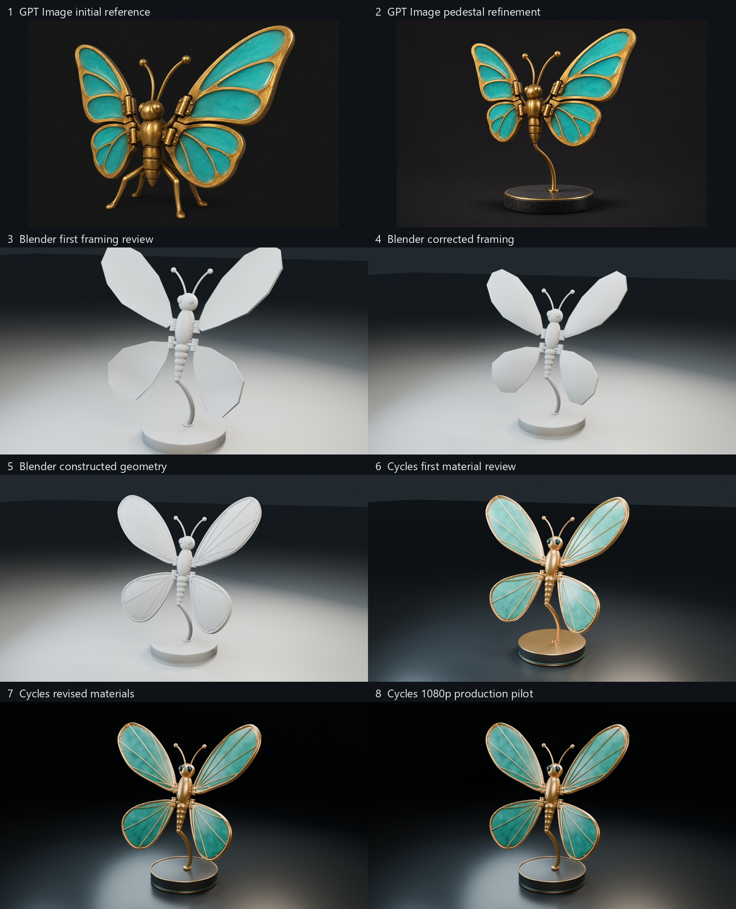
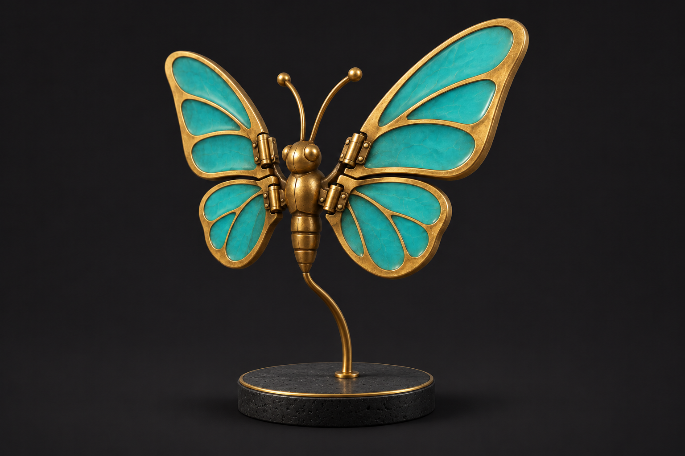
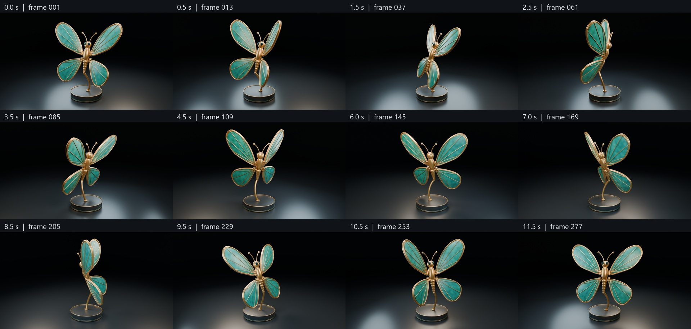
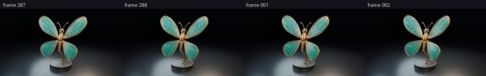

SVG & 3D Design · GPT Image · Blender · FFmpeg
Papilio
Butterfly in motion
A brass and turquoise kinetic sculpture. Twelve seconds. Six wing cycles. One complete camera orbit.
1920 × 1080 · 24 fps · 288 frames · H.264 · silent
The creative loop
The SVG & 3D Design plugin supplies agent instructions for creating editable vector and 3D artifacts. Here its workflow guided an SVG-to-native-Blender build. GPT Image supplied visual references; Blender created the geometry, keyframes, and rendered frames; FFmpeg encoded the video. The image references were interpreted into geometry rather than automatically converted into a mesh.
The built-in image tool did not expose its exact model identifier, so this project does not claim GPT Image 2 or 2.5. No live Blender MCP connection was used: the scripts ran in a local background Blender process. Original guide: OpenAI SVG & 3D Design guide.
| Stage / tool | Input | Output and actual revision |
|---|
| Concept / GPT Image | Text brief, then first PNG + edit prompt | Two PNGs; legs replaced with support and pedestal |
| Profile / agent + SVG | Wing design and cubic contour points | Editable M/C/Z SVG, consumed directly by build_scene.py |
| Blockout / Blender | SVG + parameter JSON + script | Clay .blend + views; widened camera after cropped tips |
| Geometry + look / Blender | Contours, material parameters, lights | Brass plates, enamel, rims, ribs, fasteners; two look passes |
| Motion / EEVEE | Four hinge controls + periodic keyframes | 12-second preview; framing, crossing, and loop checks |
| Final / Cycles + FFmpeg | Final .blend, 288 rendered PNGs | 1080p H.264 video; decoding and browser playback verified |
Actual iterations

 Concept 1: establish palette and wing construction.
Concept 1: establish palette and wing construction.
Concept 2: replace legs with a museum sculpture support.Fast motion preview
Final frame sampling and loop boundary


Source reliability release 1.1.1
The original animation and all existing scene checkpoints and visual assets are preserved. This release repairs the path from a configuration change to the correct revised export. The development record retains issues, decisions, commands, observed results, and failed attempts.
Download the versioned source package. Movies and raw frame caches are excluded from the source-only ZIP; preview media in its HTML guide uses the published website.
Current reproduction commands, configuration contract, device selection, and receipts.
Production decisions
Butterfly animation production record
Reference development
The initial preflight concept established the brass and turquoise palette and four-wing construction. A GPT Image edit replaced insect legs with a curved support and a low dark pedestal. Both reference images and the exact prompts are retained.
Geometry development
The first clay review showed a connected support, body, and four hinge assemblies but cropped the upper wing tips and pedestal. The second blockout widened the framing: radius 11.8 to 14, lens 43 to 40 mm, and a slightly higher target. Multi-view renders then showed the whole sculpture.
The detailed geometry reads cubic wing paths from an editable SVG and constructs thick brass plates, separate enamel layers, front and rear raised rims, ribs, fasteners, and hinge controls. Front, side, rear, and three-quarter views were reviewed. The SVG budget check passed: 1513 byte SVG, 20621 byte actual 400 by 600 PNG export.
Materials and lighting
The first color review showed washed-out front enamel, an unintended solid-gold pedestal top, and a background horizon seam. The second pass deepened the enamel palette, reduced clearcoat/specular reflection, replaced the cap with an annular brass rim, and added a curved studio backdrop. Actual Cycles renders confirmed the revised front and rear appearance.
Motion and review
The complete inexpensive EEVEE preview contains 288 frames, six wing cycles, a complete camera orbit, and periodic subtle lighting. All 288 camera-framing checks passed. A sampled surface-intersection screen found no wing/wing or wing/body crossings. Camera and hinge transforms and boundary velocity estimates match across the loop. No external image dependencies were found.
The preview was encoded and decoded successfully. Browser playback reached the end of the complete 12 second file, and two encoded seam replays passed. The contact sheet and subsecond final-quality samples were visually inspected. Playback checks and visual sampling are recorded separately; no audio was requested.
Editability check
A separate configuration raised wing amplitude from 20 to 25 degrees. Rebuilding produced 40 degree upper-wing peaks instead of 35 degrees while preserving framing, loop continuity, and the sampled intersection checks. The delivered configuration was left at amplitude 20. The altered scene is clearly named editability-check and is not the selected delivery scene.
Final rendering
The 1080p Cycles/OptiX pilot was reviewed. All 288 final frames rendered successfully in 1231.077 seconds using 32 maximum adaptive samples, the OptiX denoiser, and a fixed seed. The first three seconds were encoded during rendering as an intermediate final-quality check and passed complete browser playback.
Final movie verification
papilio-final-1080p.mp4 is a 6775983 byte H.264 movie at 1920 by 1080, 24 fps, with 288 decoded frames and a duration of exactly 12.000000 seconds. Every source PNG was checked for integrity and consistent dimensions. Complete decoding and browser playback passed, followed by two encoded loop replays.
The final contact sheet uses staggered time samples to avoid phase-locking to the two-second wing cycle. The contact sheet, selected full-resolution frames, and the last-to-first boundary strip were visually reviewed. Source-frame seam mean difference is 3.684983 RGB levels, compared with the average adjacent-frame difference near the boundary; the ratio is 1.005782. This image comparison complements the exact saved-scene transform and velocity checks. It is not a claim of pixel identity between successive moving frames.
Delivery
The Space production page contains the two image references, clay and geometry reviews, material revisions, complete motion preview, final-quality excerpt, validated final Blender scene, and validation receipts. The final film, poster, final contact sheet, boundary strip, and editable source archive are published with the completed delivery section. Raw frame caches remain in the local project; the archive includes the scene and scripts needed to reproduce them.
Exact image prompts
Image reference prompts
Both references were produced using built-in image generation. The tool does not reveal an independently verified model version.
Initial reference from preflight
Use case: stylized-concept. Asset type: single preflight reference image to verify image generation for a Blender project. Create one simple three-quarter concept view of a small brass butterfly sculpture with turquoise enamel wing panels and visible hinges, on a plain dark background. Keep the entire object in frame. No text, no logo, no extra objects. A clear simple study is sufficient; this is an access test, not a final production design.
Production concept refinement
Edit target: concept-v01.png.
Use case: precise-object-edit. Edit this brass-and-turquoise butterfly into a museum kinetic sculpture. Preserve the four distinct wing shapes, enamel inlays, brass rims, exposed hinges, and segmented body. Remove the insect legs. Mount the body on one slender curved brass support rising from a low circular black basalt pedestal with a narrow brass rim. Show the whole sculpture and pedestal with generous margin in a three-quarter product view, dark charcoal studio background, clear soft highlights. Do not crop wing tips. No text, logos, extra objects, or invented floating parts. This is concept reference for building real editable 3D geometry.
Delivery validation
Papilio final validation
| Check |
Result |
| Final render |
288 frames, 1920 by 1080, Cycles with OptiX GPU and denoiser |
| Render duration |
1231.077 seconds on the production machine |
| Movie |
H.264, 1920 by 1080, 24 fps, 12.000000 seconds, 288 decoded frames |
| Movie file size |
6775983 bytes |
| All source PNGs |
Integrity and consistent-dimension checks passed |
| Encoded decoding |
Passed without reported errors |
| Complete browser playback |
Reached 12 seconds with no video-element error |
| Encoded seam replay |
Two replays across the loop boundary passed |
| Saved scene reopening |
Passed |
| All-frame camera bounds |
288 frames checked; no required-margin violations |
| Sampled surface intersections |
No wing/wing or wing/body crossings found at sampled poses |
| Loop transform error |
0.0 in the recorded camera and hinge matrix comparison |
| Loop boundary velocity error |
0.0 in the recorded finite-difference comparison |
| Missing external images |
None |
| Parameter editing |
Independent amplitude change from 20 to 25 produced peak angle 40 rather than 35 degrees |
| SVG export budget |
1513 byte SVG below its actual 20621 byte PNG export at 400 by 600 |
Visual review covered the clay and material iterations, multiple viewpoints, final contact sheets, selected full-resolution frames, and the loop-boundary strip. Complete encoded playback and loop replay were checked separately. The movie is intentionally silent.
The source-frame seam mean RGB difference was 3.684983, with a seam-to-neighbor difference ratio of 1.005782. Successive frames intentionally differ because the sculpture and camera keep moving; the exported clip omits the duplicate endpoint at time 12 seconds.
The sculpture is an artistic model. The surface-intersection screen is not mechanical or fabrication validation. No audio, third-party 3D model, external texture, or paid 3D-generation provider was used.
Original creative brief
Papilio kinetic butterfly
Create a silent 12 second seamless looping museum film at 1920 by 1080 and 24 fps. The editable sculpture has four brass-rimmed turquoise enamel wings, exposed hinge assemblies, a segmented body, curved antennae, a slender support, and a low dark stone pedestal. The camera completes one full orbit; the wings complete six gentle cycles. This is an artistic sculpture, not a mechanically validated manufacturing design.
Use GPT Image concept references, editable SVG wing outlines as a geometry source, and the SVG & 3D Design workflow to construct the Blender scene. Preserve stage checkpoints and actual renders, record visible issues and corrections, and inspect the entire encoded animation before delivery.
The reference refinement removes legs from the initial preflight concept and replaces them with a pedestal support. Preserve a coherent silhouette and useful reference cues while constructing actual thickness, rear surfaces, and connected parts.
Sources and references
The OpenAI tutorial, video, and plugin establish the reference-to-editable-geometry approach. The butterfly sculpture, its SVG contours, native Blender scene, animation, and renders were developed for this project.
Original tutorial and plugin
Image generation and model background
Blender workflow references
Technical documentation for reproduction and verification
- W3C — SVG 2 Paths — Path syntax, including moveto, cubic Bézier curves, and closepath.
- FFmpeg — image2 image sequences — Image-sequence format reference carried forward from the original walkthrough.
- FFmpeg — command-line documentation — Encoding and decoding command reference.
- FFmpeg — ffprobe documentation — Inspecting movie codec, dimensions, duration, frame rate, and decoded frame count.
- Pillow — Image module — Image opening, verification, pixel comparisons, and contact-sheet processing.
- Microsoft — Playwright for Python — Browser automation used for complete video playback, loop replay, and layout checks.
- Python — Python 3.13 documentation — Standard-library reference for local production and verification helpers.
- GitHub Docs — Creating a GitHub Pages site — Static publication of this guide from the main branch at the repository root.
- GitHub CLI — gh repo create — Repository creation command reference.
Project inputs and generated references
The two concept images were generated for this project using the prompts recorded in this guide. The SVG and parameter files supplied the actual geometry inputs. No external 3D asset or image texture was used.
The model pages document options discussed in the walkthrough; they do not establish which image model produced the concepts. Tool documentation is provided for reproduction. References updated 27 November 2026.